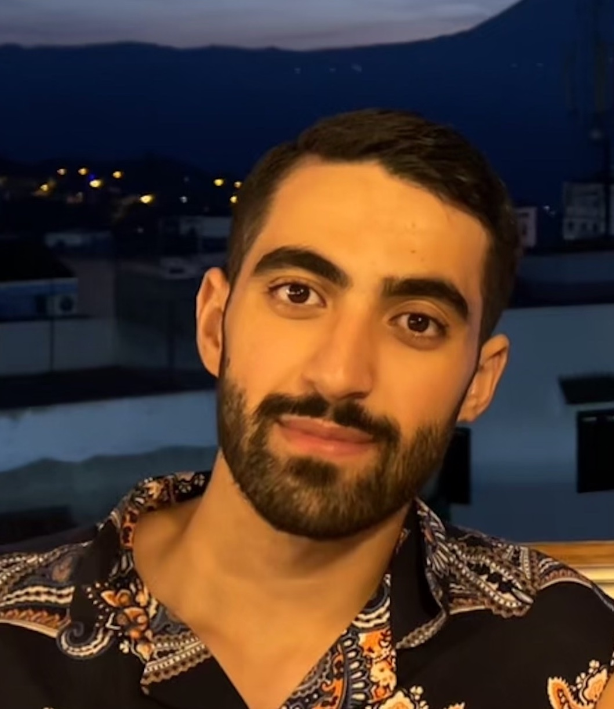

|
Walid Bousselham I'm a PhD student at Tübingen AI Center, advised by Prof. Hilde Kuehne. I'm also participating in MIT-IBM Watson Sight and Sound Project. My primary research area is deep learning for multimodal models. I am interested in various aspects of these models, ranging from improving their pretraining processes and understanding their internal prediction mechanisms to exploring zero-shot adaptation capabilities. Prior to this, I finished my Master of Engineering in Applied Mathematics at ENSTA Paris in France and my Master of Science in Statistics and applied Probabilities at the National University of Singapore (NUS) . |
 |
üî• News05.2024 I spend the summer 2024 at MiT CSAIL as a visiting scholar working with Hendrik Strobelt and Angie Boggust. 05.2024 I gave a talk at "Cohere For AI - Community Talks" regarding our latest work "LeGrad" in collaboration with MiT & IBM Research. 03.2024 Our paper Grounding Everything: Emerging Localization Properties in Vision-Language Transformers was accepted at CVPR 2024!. 01.2024 I gave an interview to the Computer Vision News magazine, that features our recent paper "Grounding Everything". [Link to the interview] 01.2024 I will be attending the BMVA Symposium on Vision and Language with an oral and a poster presenting our recent paper Grounding Everything. |
üî¨ Featured Research |


{kind=link}
üõ†Ô∏è Open-source Libraries |
|
MaskInversion
A library for generating localized embeddings of CLIP-like models via optimization of explainability maps. pip install maskinversion_torch
GitHub / PyPI |
|
|
|
LeGrad
An explainability method for Vision Transformers that, given a text prompt, generates a heatmap localizing the part of the image that is important for the model to recognize the text prompt. pip install legrad_torch
GitHub / PyPI |
|
GEM (Grounding Everything Method)
A library for exploring emerging localization properties in Vision-Language Transformers. pip install gem_torch
GitHub / PyPI |
|
|
|
Data Stream
A Python tool for streaming data from remote servers to local compute resources, particularly useful for training models on large datasets stored remotely without requiring local storage (developed for internal use). pip install data-streaming
GitHub / PyPI |
üì∞ Media Coverage |
|
Talk at Cohere For AI - Community Talks
Presented our latest work on LeGrad, discussing novel approaches to explainability in Vision Transformers. Watch Talk / LeGrad Project |
|
|
Computer Vision News Magazine Interview
Featured interview discussing our paper "Grounding Everything" and its implications for Vision-Language models. Read Interview / GEM Project |